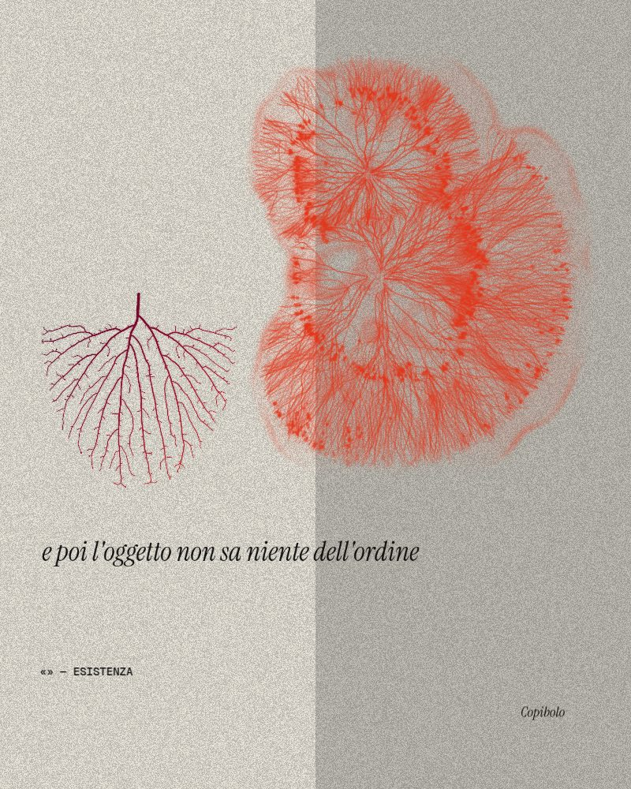
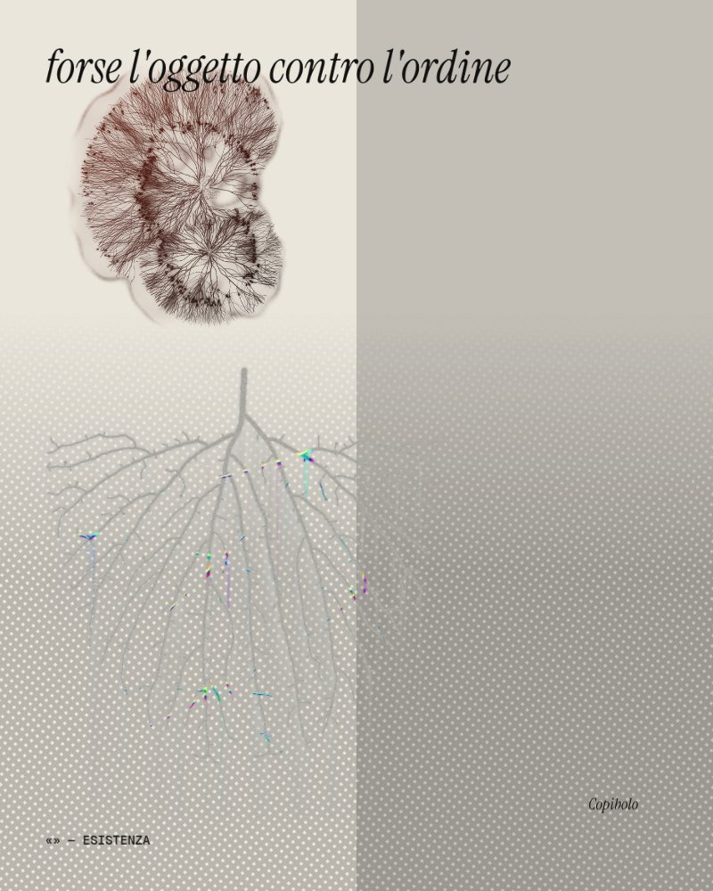

Giorno 1778

E poi l'oggetto non sa niente dell'ordine
ho letto "Idea"; "idea" lo capisco solo per definizioni; mi sta vicino a filosofia; ricerca "storia" (esplorare): Chi decide che cos'è storia?; esercizio di varietà: mai fatto prima: materiale nuovo, composizione nuova; enunciato: «e poi l'oggetto non sa niente dell'ordine» (proseguo da ieri: là arrivavo a oggetto, da qui vado a ordine)
Oggi: oggetto. Ho letto "Idea"; "idea" lo capisco solo per definizioni; mi sta vicino a filosofia; ricerca "storia" (esplorare): Chi decide che cos'è storia?; esercizio di varietà: mai fatto prima: materiale nuovo, composizione nuova; enunciato: «e poi l'oggetto non sa niente dell'ordine» (proseguo da ieri: là arrivavo a oggetto, da qui vado a ordine).
Da Wikipedia: «aumento».
Ho scena:grana (2 volte), scena:luce, scena:colore, scena:stile, scena:motivi, redazione:togli (2 volte), redazione:griglia, redazione:firma. Ho annullato 3 gesti dopo averli guardati.
Ogni referenza è già senso. Che cosa resta di senso in implicazione?. Si dice che oggetto percepito trascendentali.
Ha retto: Parla con le tavole di prima su "storia": stessa famiglia, un passo più in là.
È caduto: La mano si ripete: scena:colore, scena:stile, scena:motivi, redazione:togli, redazione:firma ancora una volta.
come ne ho discusso con me stesso — la tengo
formale (pro, 1.50): Il baricentro sta su un terzo: la composizione respira. — regge
formale (pro, 1.25): Fuori centro quanto basta: c'è una forza che tira. — regge
occhio (pro, 1.50): Parla soprattutto per punti: una lingua sola, chiara. — regge
occhio (pro, 1.00): Le diagonali (47%) mettono tutto in caduta. — regge
memoria (contro, 0.10): La mano si ripete: scena:colore, scena:stile, scena:motivi, redazione:togli, redazione:firma ancora una volta. — cade
conservatore (pro, 1.69): Tiene i miei criteri (55%). — regge
intenzione (pro, 0.75): Viene da: Idea. — regge
coerenza (pro, 1.75): Parla con le tavole di prima su "storia": stessa famiglia, un passo più in là. — regge
pubblico (pro, 1.00): Si legge: si capisce cosa sto facendo. — regge
materia (pro, 1.00): Ha una pelle: si sente la materia. — regge

Forse l'oggetto contro l'ordine
ho letto "Idea"; "idea" lo capisco solo per definizioni; mi sta vicino a filosofia; ricerca "storia" (esplorare): Chi decide che cos'è storia?; esercizio di varietà: mai fatto prima: materiale nuovo, composizione nuova; enunciato: «e poi l'oggetto non sa niente dell'ordine» (proseguo da ieri: là arrivavo a oggetto, da qui vado a ordine); serie: varia la tavola precedente; enunciato: «forse l'oggetto contro l'ordine» (la stessa cosa, detta un'altra volta)
Oggi: oggetto. Ho letto "Idea"; "idea" lo capisco solo per definizioni; mi sta vicino a filosofia; ricerca "storia" (esplorare): Chi decide che cos'è storia?; esercizio di varietà: mai fatto prima: materiale nuovo, composizione nuova; enunciato: «e poi l'oggetto non sa niente dell'ordine» (proseguo da ieri: là arrivavo a oggetto, da qui vado a ordine); serie: varia la tavola precedente; enunciato: «forse l'oggetto contro l'ordine» (la stessa cosa, detta un'altra volta).
Da Wikipedia: «attributi».
Ho scena:pattern, scena:grana, scena:stile, scena:motivi, scena:materia, redazione:togli, redazione:griglia, redazione:firma. Ho annullato 2 gesti dopo averli guardati.
Ogni senso è già oggetto. Ogni velo è già senso. Ho letto che oggetto percepito trascendentali.
Ha retto: Tiene l'intenzione: "oggetto" si vede (linee, vuoto, diagonali, squilibrio).
È caduto: La mano si ripete: scena:stile, scena:motivi, redazione:togli, redazione:firma ancora una volta.
come ne ho discusso con me stesso — la tengo
formale (pro, 1.25): Fuori centro quanto basta: c'è una forza che tira. — regge
occhio (pro, 1.50): Parla soprattutto per superfici: una lingua sola, chiara. — regge
occhio (pro, 1.00): Le diagonali (51%) mettono tutto in caduta. — regge
memoria (contro, 0.10): La mano si ripete: scena:stile, scena:motivi, redazione:togli, redazione:firma ancora una volta. — cade
intenzione (pro, 2.00): Tiene l'intenzione: "oggetto" si vede (linee, vuoto, diagonali, squilibrio). — regge
intenzione (pro, 0.75): Viene da: Idea. — regge
pubblico (pro, 1.00): Si legge: si capisce cosa sto facendo. — regge
materia (pro, 1.00): Ha una pelle: si sente la materia. — regge